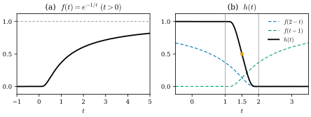
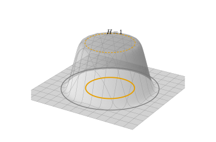
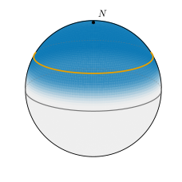

12.3 범프 함수
이 절의 목표
- \(e^{-1/t}\)에서 출발해 매끄러운 계단 함수와 \(\R^n\)의 범프 함수를 만들 수 있다.
- 함수의 받침을 정의하고, 받침이 컴팩트한 함수의 예와 비예를 들 수 있다.
- 매끄러운 다양체의 컴팩트 집합마다 범프 함수가 있음을 증명하고, 이것으로 국소적으로 정의된 매끄러운 함수를 다양체 전체로 늘일 수 있다.
- 다항식으로는 범프 함수를 만들 수 없다는 것과, \(\dim M \ge 1\)이면 \(C^\infty(M)\)이 무한차원이라는 것을 설명할 수 있다.
선수 지식
동기
12.1절과 12.2절에서 매끄러운 함수와 사상은 모두 차트 안에서 국소적으로 판정했다. 이제 반대 방향의 일이 필요하다. 차트 하나 위에서만 정의된 함수를 다양체 전체의 매끄러운 함수로 늘이고 싶고, 뒤에서는 여러 차트에서 만든 대상을 이어 붙이고 싶다(12.4절). 그 도구가 “어떤 집합 위에서는 \(1\)이고, 조금 떨어진 곳에서는 \(0\)인” 매끄러운 함수다.
이런 함수가 있다는 것은 당연하지 않다. 다항식이나 \(\sin\), \(e^t\)처럼 익숙한 함수는 이 일을 하지 못한다. 예를 들어 열린집합 위에서 \(0\)인 다항식은 모든 곳에서 \(0\)이다(비예 12.3.10). 이런 함수들은 한 점 근처의 값이 전체를 결정한다. 해석적(analytic)이라 부르는 이 성질이 범프 함수를 막는다. 다행히 매끄러운 함수는 훨씬 유연하다. 2장에서 본 함수 \(f(t) = e^{-1/t}\) (\(t \gt 0\)), \(f(t) = 0\) (\(t \le 0\))은 매끄럽지만 \(0\)에서 모든 계의 도함수가 \(0\)이어서, \(0\)의 왼쪽과 오른쪽이 서로 “모른다”(예 2.2.20). 이 절은 이 한 함수로부터 필요한 모든 범프 함수를 만든다.

0에서 천천히 올라가 점선 y = 1에 다가간다. (b) 검은 곡선 h(t)는 t ≤ 1에서 1, t ≥ 2에서 0이고 그 사이에서 매끄럽게 떨어지며, t = 1.5에서 주황 점 1/2을 지난다. 파란 점선 f(2−t)와 청록 점선 f(t−1)도 그려져 있다.">매끄러운 계단 함수와 받침
이 절 전체에서 \(f\)는 예 2.2.20의 함수다. 정의에서 \(f \ge 0\)이고, \(f(t) \gt 0\)일 필요충분조건은 \(t \gt 0\)이다.
보조정리 12.3.1 (매끄러운 계단 함수, smooth cutoff function). 함수 \(h\colon \R \to \R\)을
로 정의하면 \(h\)는 매끄럽고, \(t \le 1\)이면 \(h(t) = 1\), \(1 \lt t \lt 2\)이면 \(0 \lt h(t) \lt 1\), \(t \ge 2\)이면 \(h(t) = 0\)이다.
증명. 분모는 \(0\)이 아니다. \(t \lt 2\)이면 \(2 - t \gt 0\)이므로 \(f(2 - t) \gt 0\)이고, \(t \ge 2\)이면 \(t - 1 \ge 1 \gt 0\)이므로 \(f(t - 1) \gt 0\)이다. 두 항은 모두 \(0\) 이상이므로 분모는 언제나 양수다. 매끄러움. \(t \mapsto f(2 - t)\)와 \(t \mapsto f(t - 1)\)은 매끄러운 함수 \(f\)와 일차식의 합성이므로 매끄럽고, 분모가 양수이므로 명제 2.2.12(a), (b), (c)에 의해 \(h\)는 매끄럽다. 값. \(t \le 1\)이면 \(t - 1 \le 0\)이므로 \(f(t - 1) = 0\)이고 \(h(t) = f(2 - t)/f(2 - t) = 1\)이다. \(t \ge 2\)이면 \(f(2 - t) = 0\)이므로 \(h(t) = 0\)이다. \(1 \lt t \lt 2\)이면 두 항이 모두 양수이므로 \(h(t)\)는 양수이고, 분자가 분모보다 작으므로 \(1\)보다 작다.
검증: verify/v-12-3-bump-functions.py
\(h\)를 뒤집으면 반대 방향의 계단도 얻는다. \(\lambda(s) = 1 - h(1 + s)\)로 두면 \(\lambda\)는 매끄럽고 \(0 \le \lambda \le 1\)이며, \(s \le 0\)이면 \(\lambda(s) = 0\), \(s \ge 1\)이면 \(\lambda(s) = 1\), \(s \gt 0\)이면 \(\lambda(s) \gt 0\)이다. 이 장의 나머지에서 \(\lambda\)는 언제나 이 함수를 뜻한다. 이제 “어디서 \(0\)이 아닌가”를 재는 말이 필요하다.
정의 12.3.2 (받침, support). \(X\)가 위상공간이고 \(g\colon X \to \R^k\)라 하자. 집합 \(\{p \in X : g(p) \ne 0\}\)의 \(X\)에서의 폐포(정의 3.1.15)
를 \(g\)의 받침(support)이라 한다. \(\supp g\)가 컴팩트하면 \(g\)의 받침이 컴팩트하다(compactly supported)고 하고, \(U \subseteq X\)에 대해 \(\supp g \subseteq U\)이면 \(g\)의 받침이 \(U\)에 있다(supported in \(U\))고 한다.
2장에서는 \(\R^n\)의 열린집합 위의 함수에 대해 같은 말을 썼다(정리 2.6.9(b)). 정의 12.3.2는 그것을 위상공간 위의 함수로 넓힌 것이다. \(\supp g\)는 닫힌집합이고, \(g\)는 \(X \setminus \supp g\)에서 \(0\)이다.
예 12.3.3 (받침). (a) \(\{f \ne 0\} = (0, \infty)\)이므로 \(\supp f = [0, \infty)\)다. \(0\)의 모든 근방은 \((0, \infty)\)와 만나고(명제 3.1.17), \([0, \infty)\)는 닫혀 있기 때문이다. 받침은 컴팩트하지 않다.
(b) \(\{h \ne 0\} = (-\infty, 2)\)이므로 \(\supp h = (-\infty, 2]\)다. 곱 \(h(t)\,h(-t)\)는 \(\abs{t} \lt 2\)에서만 \(0\)이 아니므로 받침이 \([-2, 2]\)로 컴팩트하다.
(c) \(\sin\colon \R \to \R\)은 정수배의 \(\pi\)에서만 \(0\)이지만 \(\supp \sin = \R\)이다. 각 점 \(k\pi\)의 모든 근방이 \(\sin \ne 0\)인 점을 포함하기 때문이다.
보조정리 12.3.4 (\(\R^n\)의 범프 함수). \(c \in \R^n\)이고 \(0 \lt r_1 \lt r_2\)라 하자. 함수 \(H\colon \R^n \to \R\)을
로 정의하면 \(H\)는 매끄럽고 \(0 \le H \le 1\)이며, \(\abs{x - c} \le r_1\)이면 \(H(x) = 1\), \(r_1 \lt \abs{x - c} \lt r_2\)이면 \(0 \lt H(x) \lt 1\), \(\abs{x - c} \ge r_2\)이면 \(H(x) = 0\)이다. 따라서 \(\supp H = \overline{B}_{r_2}(c)\)이고 컴팩트하다.
증명. 괄호 안의 수 \(s(x) = 1 + (\abs{x - c} - r_1)/(r_2 - r_1)\)은 \(\abs{x - c} = r_1\)일 때 \(1\), \(\abs{x - c} = r_2\)일 때 \(2\)이고 \(\abs{x - c}\)에 대해 증가한다. 따라서 값에 관한 주장은 보조정리 12.3.1에서 곧바로 나온다. 매끄러움. \(\abs{x - c}\)는 \(x = c\)에서 미분가능하지 않으므로 조심해야 한다. \(\R^n \setminus \{c\}\)에서는 \(\abs{x - c} = \sqrt{\sum_i (x^i - c^i)^2}\)가 양수의 제곱근이어서 매끄럽고, 따라서 \(H\)도 매끄럽다(명제 2.2.12(b)). 열린공 \(B_{r_1}(c)\)에서는 \(s(x) \lt 1\)이므로 \(H \equiv 1\)이고, 상수함수는 매끄럽다. 두 열린집합 \(\R^n \setminus \{c\}\)와 \(B_{r_1}(c)\)가 \(\R^n\)을 덮으므로 매끄러움의 국소성에 의해 \(H\)는 매끄럽다. 받침. \(\{H \ne 0\} = B_{r_2}(c)\)이고 그 폐포는 \(\overline{B}_{r_2}(c)\)다(예 3.1.18(d)). 이것은 닫혀 있고 유계이므로 컴팩트하다(정리 3.6.7).
검증: verify/v-12-3-bump-functions.py

다양체 위의 범프 함수
이제 \(M\)은 매끄러운 \(n\)-다양체이고, 경계가 있어도 된다(비고 12.1.12). 차트의 치역이 놓이는 모형 공간을 \(D\)로 쓴다. 곧 내부 차트이면 \(D = \R^n\), 경계 차트이면 \(D = \mathbb{H}^n\)이다. \(\mathbb{H}^n = \{x^n \ge 0\}\)은 \(\R^n\)에서 닫혀 있다.
정의 12.3.5 (범프 함수, bump function). \(A \subseteq M\)이고 \(U \subseteq M\)이 \(A\)를 포함하는 열린집합이라 하자. 매끄러운 함수 \(\psi\colon M \to [0, 1]\)이 \(A\) 위에서 \(\psi \equiv 1\)이고 \(\supp \psi \subseteq U\)이면, \(\psi\)를 \(U\)에 받침을 둔 \(A\)의 범프 함수(bump function)라 한다.
예를 들어 보조정리 12.3.4의 \(H\)는 \(\R^n\)에서 \(U = B_{r_3}(c)\) (\(r_3 \gt r_2\))에 받침을 둔 \(\overline{B}_{r_1}(c)\)의 범프 함수다. 다양체에서는 이것을 차트로 옮긴다. 먼저 한 점 둘레에서 하자.
보조정리 12.3.6 (한 점 둘레의 범프 함수). \(p \in U\)이고 \(U \subseteq M\)이 열린집합이면, \(p\)의 열린 근방 \(W\)와 매끄러운 함수 \(g\colon M \to [0, 1]\)이 있어서 \(W\) 위에서 \(g \equiv 1\)이고 \(\supp g\)는 \(U\)에 들어 있는 컴팩트 집합이다.
증명 아이디어: \(p\) 둘레의 차트 \(\varphi\)로 보고, 좌표 공간에서 \(\varphi(p)\)를 중심으로 하는 작은 범프 \(H\)를 \(g = H \circ \varphi\)로 끌어온다. 차트 밖에서는 \(0\)으로 둔다. 이어 붙인 곳이 매끄러운 것은 \(H\)의 받침이 차트 안쪽에 컴팩트하게 들어 있기 때문이다.
증명. 1단계: 차트와 반지름. \(p\) 둘레의 매끄러운 차트를 \(U\)와의 교집합으로 줄여 \(V \subseteq U\)인 차트 \((V, \varphi)\)를 얻는다(명제 11.2.14(a), 비고 11.5.10). \(\varphi(V)\)는 \(D\)의 열린집합이므로 \(\R^n\)의 열린집합 \(O\)가 있어서 \(\varphi(V) = O \cap D\)이다(정의 3.3.1). \(x_0 = \varphi(p) \in O\)이므로 \(B_\varepsilon(x_0) \subseteq O\)인 \(\varepsilon \gt 0\)이 있고, 따라서 \(B_\varepsilon(x_0) \cap D \subseteq \varphi(V)\)이다. \(r_1 = \varepsilon/4\), \(r_2 = \varepsilon/2\)로 두고 \(H\)를 보조정리 12.3.4의 함수(\(c = x_0\))라 하자.
2단계: 컴팩트 집합. \(\overline{B}_{r_2}(x_0) \cap D\)는 두 닫힌집합의 교집합이므로 닫혀 있고 유계이므로 컴팩트하며(정리 3.6.7), \(r_2 \lt \varepsilon\)이므로 \(\varphi(V)\)에 들어 있다. 따라서 \(C = \varphi^{-1}\big(\overline{B}_{r_2}(x_0) \cap D\big)\)는 연속사상 \(\varphi^{-1}\)에 의한 컴팩트 집합의 상으로서 컴팩트하고(명제 3.6.5(c)), \(M\)이 하우스도르프이므로 \(M\)에서 닫혀 있다(명제 3.6.5(b)).
3단계: \(g\)의 정의와 매끄러움. \(V\) 위에서는 \(g = H \circ \varphi\), \(M \setminus V\) 위에서는 \(g = 0\)으로 정의한다. \(V\) 위의 좌표표현 \(g \circ \varphi^{-1} = H|_{\varphi(V)}\)는 매끄러운 함수 \(H\colon \R^n \to \R\)의 제한이므로 매끄럽다(경계 차트이면 \(H\) 자신이 정의 11.5.7의 매끄러운 확장이다). 열린집합 \(M \setminus C\) 위에서는 \(g = 0\)이다. \(q \in V \setminus C\)이면 \(\abs{\varphi(q) - x_0} \gt r_2\)이므로 \(H(\varphi(q)) = 0\)이고, \(q \notin V\)이면 정의에서 \(0\)이기 때문이다. \(C \subseteq V\)이므로 두 열린집합 \(V\)와 \(M \setminus C\)가 \(M\)을 덮고, 각각에서 \(g\)가 매끄러우므로 명제 12.1.7(c)에 의해 \(g\)는 매끄럽다.
4단계: 나머지 성질. \(0 \le H \le 1\)이므로 \(0 \le g \le 1\)이다. \(W = \varphi^{-1}(B_{r_1}(x_0) \cap D)\)는 \(p\)를 포함하는 \(V\)의 열린집합, 곧 \(M\)의 열린집합이고, 그 위에서 \(g \equiv 1\)이다. \(\{g \ne 0\} \subseteq C\)이고 \(C\)는 닫혀 있으므로 \(\supp g \subseteq C \subseteq V \subseteq U\)이다. \(\supp g\)는 컴팩트 집합 \(C\)의 닫힌부분집합이므로 컴팩트하다(명제 3.6.5(a)).
이 증명에서 하우스도르프 조건이 쓰인 곳을 눈여겨보자. \(C\)가 닫혀 있어야 \(M \setminus C\)가 열려 있고, 그래야 “차트 밖에서 \(0\)”이라는 정의가 매끄럽게 이어진다. 한 점 둘레의 범프 함수들을 모으면 컴팩트 집합의 범프 함수를 얻는다.
명제 12.3.7 (컴팩트 집합의 범프 함수). \(K \subseteq M\)이 컴팩트하고 \(U \subseteq M\)이 \(K\)를 포함하는 열린집합이면, \(U\)에 받침을 둔 \(K\)의 범프 함수 \(\psi\)가 있다. 더구나 \(\psi\)의 받침은 컴팩트하게, 그리고 \(K\)를 포함하는 어떤 열린집합 위에서 \(\psi \equiv 1\)이 되게 고를 수 있다.
증명. 각 \(p \in K\)에 보조정리 12.3.6을 써서 \(W_p\)와 \(g_p\)를 얻는다. \(\{W_p\}_{p \in K}\)는 \(K\)를 덮으므로 유한개 \(W_{p_1}, \dots, W_{p_m}\)이 \(K\)를 덮는다. \(g = g_{p_1} + \dots + g_{p_m}\)은 매끄럽고(명제 12.1.5) \(g \ge 0\)이며, 열린집합 \(W = W_{p_1} \cup \dots \cup W_{p_m} \supseteq K\) 위에서는 어느 한 항이 \(1\)이므로 \(g \ge 1\)이다. 각 \(g_{p_i} \ge 0\)이므로 \(\{g \ne 0\} = \bigcup_i \{g_{p_i} \ne 0\} \subseteq \bigcup_i \supp g_{p_i}\)이고, 오른쪽은 컴팩트 집합 유한개의 합집합이므로 컴팩트하고(명제 3.6.5(d)) 닫혀 있다. 따라서 \(\supp g\)는 \(U\)에 들어 있는 컴팩트 집합이다.
이제 \(\psi = \lambda \circ g\)로 두자(\(\lambda(s) = 1 - h(1 + s)\)). \(\psi\)는 매끄럽고 \(0 \le \psi \le 1\)이다. \(W\) 위에서는 \(g \ge 1\)이므로 \(\psi = 1\)이고, \(g = 0\)인 곳에서는 \(\psi = \lambda(0) = 0\)이다. 따라서 \(\{\psi \ne 0\} \subseteq \{g \ne 0\}\)이고 \(\supp \psi \subseteq \supp g\)는 \(U\)에 들어 있는 컴팩트 집합이다(컴팩트 집합의 닫힌부분집합).
따름정리 12.3.8 (국소적으로 정의된 함수의 확장). \(U \subseteq M\)이 열린집합이고 \(f\colon U \to \R^k\)가 매끄러우며 \(K \subseteq U\)가 컴팩트하면, 매끄러운 \(F\colon M \to \R^k\)가 있어서 \(K\)를 포함하는 어떤 열린집합 위에서 \(F = f\)이고 \(\supp F\)는 \(U\)에 들어 있는 컴팩트 집합이다. 특히 (\(K = \{p\}\)) \(p\) 근처에서 정의된 매끄러운 함수는 \(p\)의 어떤 근방에서 \(M\) 전체의 매끄러운 함수와 같다.
이 따름정리가 말하는 것. 매끄러운 함수는 한 점 근처의 모습만 보고는 전체에 대해 아무것도 알 수 없다. 거꾸로, 근처에서만 정의된 함수는 늘 전체의 함수로 바꿀 수 있다.
증명. 명제 12.3.7의 범프 함수 \(\psi\)(\(K\)를 포함하는 열린집합 \(W\) 위에서 \(1\), 받침은 \(U\) 안의 컴팩트 집합)를 잡는다. \(F\)를 \(U\) 위에서는 \(\psi f\), \(M \setminus \supp\psi\) 위에서는 \(0\)으로 정의한다. 두 정의역의 교집합 \(U \setminus \supp\psi\)에서는 \(\psi = 0\)이므로 두 정의가 맞는다. \(U\)와 \(M \setminus \supp\psi\)는 열려 있고(받침은 닫혀 있다) \(\supp\psi \subseteq U\)이므로 \(M\)을 덮는다. \(U\)에서 \(\psi f\)는 매끄러운 함수의 곱이므로 매끄럽고(명제 12.1.5, 성분마다), \(M \setminus \supp\psi\)에서 \(0\)은 매끄럽다. 명제 12.1.7(c)에 의해 \(F\)는 매끄럽다. \(W \cap U = W\)에서 \(F = f\)이고, \(\{F \ne 0\} \subseteq \{\psi \ne 0\}\)이므로 \(\supp F \subseteq \supp \psi\)이다.
예 12.3.9 (구면 위의 범프 함수). \(S^2\)의 높이함수 \(x^3\)은 매끄러우므로(예 12.1.3(c)) \(\psi(x) = \lambda(2x^3)\)은 \(S^2\) 위의 매끄러운 함수이고 \(0 \le \psi \le 1\)이다(명제 12.1.7(d)). \(x^3 \ge 1/2\)이면 \(2x^3 \ge 1\)이므로 \(\psi = 1\)이고, \(x^3 \le 0\)이면 \(\psi = 0\)이다. \(\lambda(s) \gt 0\)일 필요충분조건은 \(s \gt 0\)이므로 \(\{\psi \ne 0\} = \{x^3 \gt 0\}\)이고, 그 폐포는 닫힌 위 반구 \(\{x^3 \ge 0\}\)이다. (적도의 점은 \(x^3 \gt 0\)인 점들의 극한이다.) 따라서 \(\psi\)는 열린집합 \(U = \{x^3 \gt -1/2\}\)에 받침을 둔 북극 쪽 극관 \(K = \{x^3 \ge 1/2\}\)의 범프 함수다(그림 12.3.3). 이 예에서는 차트를 쓰지 않았다. 높이함수라는 전역적인 매끄러운 함수가 이미 있었기 때문이다. 명제 12.3.7은 그런 함수가 없어도 범프 함수가 있음을 보장한다.
검증: verify/v-12-3-bump-functions.py

비예 12.3.10. (a) 다항식 범프 함수는 없다. \(P\)가 \(\R^n\) 위의 다항식이고 어떤 공 \(B_\varepsilon(c)\) 위에서 \(0\)이라 하자. 방향 \(v \ne 0\)을 고정하면 \(q(t) = P(c + tv)\)는 \(t\)의 다항식이고 \(\abs{t} \lt \varepsilon/\abs{v}\)에서 \(0\)이다. \(0\)에서 \(j\)번 미분하면 \(q\)의 \(t^j\)의 계수의 \(j!\)배가 나오므로(예 1.1.20(b)와 같은 계산) 모든 계수가 \(0\)이고 \(q \equiv 0\)이다. \(v\)는 임의였으므로 \(P \equiv 0\)이다. 따라서 어떤 열린집합에서 \(1\)이고 다른 열린집합에서 \(0\)인 다항식은 없다(\(P - 1\)과 \(P\)를 보면 된다).
(b) 받침이 컴팩트할 수 없는 경우. \(\psi\)가 \(A\)의 범프 함수이면 \(A \subseteq \{\psi \ne 0\} \subseteq \supp\psi\)이다. 그래서 \(A\)가 닫혀 있지만 컴팩트하지 않으면 \(\psi\)의 받침은 컴팩트할 수 없다(컴팩트 집합의 닫힌부분집합은 컴팩트하다). 예를 들어 \(\R\)에서 \(A = [0, \infty)\)의 범프 함수는 받침이 컴팩트하지 않다. 닫혀 있지만 컴팩트하지 않은 집합의 범프 함수는 12.5절에서 단위분할로 만든다.
범프 함수가 있다는 것은 \(C^\infty(M)\)이 아주 크다는 뜻이기도 하다. 1장에서 \(C^\infty(\R)\)이 유한차원이 아님을 보았는데(예 1.1.20(d)), 모든 다양체에서 같은 일이 일어난다.
예 12.3.11 (\(C^\infty(M)\)은 무한차원이다). \(\dim M = n \ge 1\)이라 하자. 보조정리 12.3.6의 증명 1단계처럼 차트 \((V, \varphi)\)와 \(B_\varepsilon(x_0) \cap D \subseteq \varphi(V)\)인 공을 잡되, \(x_0\)을 \(D\)의 내부(\(x^n \gt 0\) 또는 \(D = \R^n\))에 두고 \(B_\varepsilon(x_0) \subseteq \varphi(V) \cap \operatorname{Int} D\)가 되게 한다. \(j = 1, 2, \dots\)에 대하여 \(c_j = x_0 + \varepsilon 2^{-j} e_1\), \(s_j = \varepsilon 2^{-j-2}\)로 두면 닫힌공 \(\overline{B}_{s_j}(c_j)\)들은 \(B_\varepsilon(x_0)\) 안에 있고 서로소다. (\(i \lt j\)이면 \(2^{-j} \le 2^{-i-1}\)이므로 \(\abs{c_i - c_j} = \varepsilon(2^{-i} - 2^{-j}) \ge \varepsilon 2^{-i-1} \gt \varepsilon(2^{-i-2} + 2^{-i-3}) \ge s_i + s_j\)이고, \(\abs{c_j - x_0} + s_j = \varepsilon(2^{-j} + 2^{-j-2}) \lt \varepsilon\)이다.) 보조정리 12.3.6의 증명처럼 \(\overline{B}_{s_j}(c_j)\)에 받침을 둔 범프 \(H_j\)(\(r_1 = s_j/2\), \(r_2 = s_j\))를 \(\varphi\)로 끌어와 \(g_j \in C^\infty(M)\)을 만든다. \(p_j = \varphi^{-1}(c_j)\)이면 \(g_j(p_j) = 1\)이고, \(i \ne j\)이면 받침이 서로소이므로 \(g_i(p_j) = 0\)이다. \(\sum_{i=1}^m a_i g_i = 0\)이면 \(p_j\)에서 값을 보아 \(a_j = 0\)이다. 따라서 \(g_1, g_2, \dots\)은 일차독립이고, \(C^\infty(M)\)은 유한차원이 아니다.
요약
- \(e^{-1/t}\)로 매끄러운 계단 함수 \(h\)를 만든다. \(h\)는 \(t \le 1\)에서 \(1\), \(t \ge 2\)에서 \(0\)이다. 이것을 거리 \(\abs{x - c}\)에 적용하면 \(\R^n\)의 범프 함수가 된다.
- 받침 \(\supp g\)는 \(\{g \ne 0\}\)의 폐포다. \(0\)이 아닌 곳이 아니라 그 폐포이고, 정의역에서 잡는다.
- 매끄러운 다양체(경계가 있어도 된다)의 컴팩트 집합 \(K\)와 열린집합 \(U \supseteq K\)에 대해, \(K\) 근처에서 \(1\)이고 받침이 \(U\) 안의 컴팩트 집합인 범프 함수가 있다(명제 12.3.7). 증명에 하우스도르프 조건이 쓰인다.
- 근처에서만 정의된 매끄러운 함수는 그 근처에서 전체의 매끄러운 함수와 같게 늘일 수 있다(따름정리 12.3.8).
- 다항식 같은 해석적 함수로는 범프 함수를 만들 수 없다. \(\dim M \ge 1\)이면 \(C^\infty(M)\)은 무한차원이다.
다음 절에서는 범프 함수를 여러 개, 경우에 따라 무한히 많이 모아 합이 \(1\)이 되게 만든다. 그것이 단위분할이다. 무한히 많은 함수를 더해도 매끄러우려면 다양체를 컴팩트 집합들로 차례로 덮는 “컴팩트 소진”이 필요하고, 여기서 제2가산 조건이 쓰인다.
연습문제
연습 12.3.1 ★ 보조정리 12.3.1의 \(h\)가 모든 \(t\)에 대하여 \(h(3 - t) = 1 - h(t)\)를 만족함을 보이고, \(h(3/2)\)를 구하여라.
풀이
\(h(3 - t) = f(t - 1)/(f(t - 1) + f(2 - t))\)이므로 \(h(t) + h(3 - t) = (f(2 - t) + f(t - 1))/(f(2 - t) + f(t - 1)) = 1\)이다. \(t = 3/2\)를 넣으면 \(2h(3/2) = 1\), 곧 \(h(3/2) = 1/2\)이다.
검증: verify/v-12-3-bump-functions.py
연습 12.3.2 ★ 다음 함수의 받침을 구하고 컴팩트한지 판정하여라. (a) \(g(t) = f(t)\,f(1 - t)\), \(g\colon \R \to \R\) (b) \(g(x) = x^1\), \(g\colon S^1 \to \R\) (c) \(g(x) = \lambda(x^1)\), \(g\colon \R^2 \to \R\) (\(\lambda(s) = 1 - h(1 + s)\))
풀이
(a) \(g(t) \ne 0\)일 필요충분조건은 \(t \gt 0\)이고 \(1 - t \gt 0\)인 것이므로 \(\{g \ne 0\} = (0, 1)\)이고 \(\supp g = [0, 1]\)이다(예 3.1.18(c)). 컴팩트하다. (b) \(\{x^1 \ne 0\} = S^1 \setminus \{(0, \pm 1)\}\)이고, \((0, \pm 1)\)은 이 집합의 점들의 극한이므로 \(\supp g = S^1\)이다. \(S^1\)이 컴팩트하므로 컴팩트하다(컴팩트 다양체 위의 함수는 받침이 언제나 컴팩트하다). (c) \(\{g \ne 0\} = \{x^1 \gt 0\}\)이고 \(\supp g = \{x^1 \ge 0\}\)이다. 닫힌 반평면은 유계가 아니므로 컴팩트하지 않다.
연습 12.3.3 ★ \(g_1, g_2\colon X \to \R\)일 때 참인지 거짓인지 판별하고 이유를 써라. (a) \(\supp(g_1 g_2) \subseteq \supp g_1 \cap \supp g_2\). (b) \(\supp(g_1 + g_2) \subseteq \supp g_1 \cup \supp g_2\). (c) \(\supp(g_1 + g_2) = \supp g_1 \cup \supp g_2\).
풀이
(a) 참. \(g_1 g_2 \ne 0\)인 점에서는 \(g_1 \ne 0\)이고 \(g_2 \ne 0\)이므로 \(\{g_1 g_2 \ne 0\} \subseteq \supp g_1 \cap \supp g_2\)이다. 오른쪽은 닫혀 있으므로 폐포도 그 안에 있다(명제 3.1.16(d)). (b) 참. \(g_1 + g_2 \ne 0\)이면 둘 중 하나는 \(0\)이 아니므로 \(\{g_1 + g_2 \ne 0\} \subseteq \supp g_1 \cup \supp g_2\)이고, 오른쪽은 닫힌집합 두 개의 합집합이므로 닫혀 있다. (c) 거짓. \(g_2 = -g_1\)이고 \(g_1 \ne 0\)이면 왼쪽은 공집합이다.
연습 12.3.4 ★ \(t \gt 0\)에서 \(f'(t)\)와 \(f''(t)\)를 계산하여, 예 2.2.20의 다항식 \(q_k\)(\(f^{(k)}(t) = q_k(1/t)e^{-1/t}\))가 \(q_1(s) = s^2\), \(q_2(s) = s^4 - 2s^3\)임을 확인하여라. 점화식 \(q_{k+1}(s) = s^2(q_k(s) - q_k'(s))\)과도 맞는지 보아라.
풀이
\(f'(t) = t^{-2}e^{-1/t}\)이므로 \(q_1(s) = s^2\)이다. 다시 미분하면 \(f''(t) = (-2t^{-3} + t^{-4})e^{-1/t}\)이므로 \(q_2(s) = s^4 - 2s^3\)이다. 점화식으로는 \(q_1 = s^2(1 - 0) = s^2\), \(q_2 = s^2(s^2 - 2s) = s^4 - 2s^3\)이다.
검증: verify/v-12-3-bump-functions.py
연습 12.3.5 ★★ \(M\)이 매끄러운 다양체이고 \(p_1, \dots, p_m \in M\)이 서로 다른 점, \(a_1, \dots, a_m \in \R\)이라 하자. \(F(p_i) = a_i\) (\(i = 1, \dots, m\))인 \(F \in C^\infty(M)\)이 있음을 보여라.
힌트
하우스도르프 조건으로 서로소인 근방들을 잡고, 각 점에 범프 함수를 둔다.
풀이
\(M\)은 하우스도르프이므로 각 쌍 \(i \ne j\)에 대해 서로소인 열린 근방 \(U_{ij} \ni p_i\), \(U_{ji} \ni p_j\)가 있다. \(U_i = \bigcap_{j \ne i} U_{ij}\)는 \(p_i\)의 열린 근방이고(유한 교집합), \(i \ne j\)이면 \(U_i \cap U_j \subseteq U_{ij} \cap U_{ji} = \varnothing\)이다. 명제 12.3.7을 \(K = \{p_i\}\), \(U = U_i\)에 써서 범프 함수 \(\psi_i\)를 얻는다. \(\psi_i(p_i) = 1\)이고, \(j \ne i\)이면 \(p_j \notin U_i \supseteq \supp\psi_i\)이므로 \(\psi_i(p_j) = 0\)이다. \(F = \sum_i a_i \psi_i\)는 매끄럽고(명제 12.1.5) \(F(p_j) = a_j\)이다.
연습 12.3.6 ★★★ \(M\), \(N\)이 매끄러운 다양체이고 \(F\colon M \to N\)이 연속이라 하자. \(F\)가 매끄러울 필요충분조건은 모든 \(g \in C^\infty(N)\)에 대하여 \(g \circ F \in C^\infty(M)\)인 것임을 보여라.
힌트
(\(\Leftarrow\)) \(F(p)\) 둘레의 차트의 좌표함수 \(y^i\)를 따름정리 12.3.8로 \(N\) 전체의 함수 \(\tilde y^i\)로 늘인다. 그리고 연습 12.1.6의 논증을 쓴다.
풀이
(\(\Rightarrow\)) 매끄러운 사상의 합성이다(명제 12.1.7(d)).
(\(\Leftarrow\)) \(p \in M\)이고 \((V, \psi = (y^1, \dots, y^n))\)이 \(F(p)\) 둘레의 차트라 하자. 좌표함수 \(y^i\)는 \(C^\infty(V)\)의 원소이다(예 12.1.3(b)). 따름정리 12.3.8을 \(K = \{F(p)\}\)에 쓰면 \(\tilde y^i \in C^\infty(N)\)과 \(F(p)\)의 열린 근방 \(V' \subseteq V\)가 있어서 \(V'\) 위에서 \(\tilde y^i = y^i\)이다. \(F\)가 연속이므로 \(p\) 둘레의 차트 \((U, \varphi)\)를 \(F(U) \subseteq V'\)이 되게 잡을 수 있다. 가정에서 \(\tilde y^i \circ F\)는 매끄럽고, \(U\) 위에서 \(\tilde y^i \circ F = y^i \circ F\)이다. 따라서 \(\psi \circ F \circ \varphi^{-1}\)의 성분 \(y^i \circ F \circ \varphi^{-1} = (\tilde y^i \circ F) \circ \varphi^{-1}\)은 \(\varphi(U)\)에서 매끄럽고(명제 12.1.2(a)), 차트 \((U, \varphi)\)와 \((V, \psi)\)(\(F(U) \subseteq V\))가 정의 12.1.6의 조건을 만족한다. \(p\)는 임의였으므로 \(F\)는 매끄럽다.
(연속성은 증명에서 \(F(U) \subseteq V'\)인 차트를 잡는 데 썼지만, 사실 가정하지 않아도 따라 나온다. \(V\)가 \(F(p)\)의 열린 근방이면 명제 12.3.7로 \(V\)에 받침을 둔 \(\{F(p)\}\)의 범프 함수 \(g\)를 잡을 수 있고, 가정에서 \(g \circ F\)가 연속이므로 \(\{g \circ F \gt 0\}\)은 \(F^{-1}(V)\)에 들어 있는 \(p\)의 열린 근방이다. 이 결과는 매끄러운 구조가 \(C^\infty(M)\)으로 결정된다는 관점의 출발점이다.)